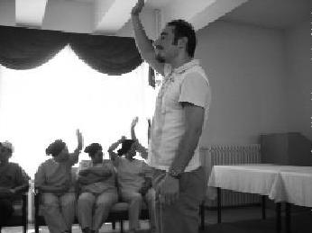

İnsan olmanın en değerli yanı iyilik yapmaktır. Türkiye Uğur Böcekleri Projesi'yle her defasında daha fazla hissettim insan olmanın güzelliğini. (Emin Barış)
Emin'i gittiğim konferanslarda görüp duruyordum. Yüzünde koca bir gülümseme vardı ve gözleri ışıldıyordu. Niye olduğunu bilmiyordum. Meğerse planları varmış keratanın. Çok iyi bir böcek oldu. Eminim, Emin'im çok başarılı olacaktır hayatta.